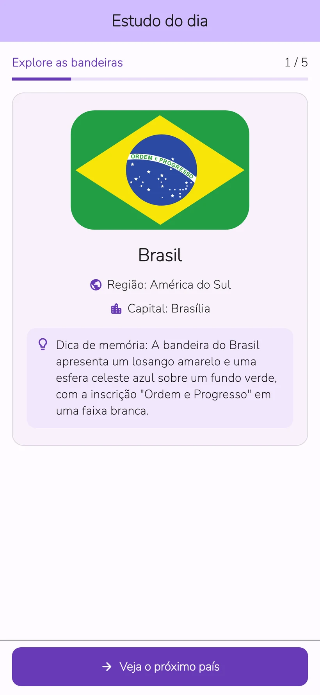
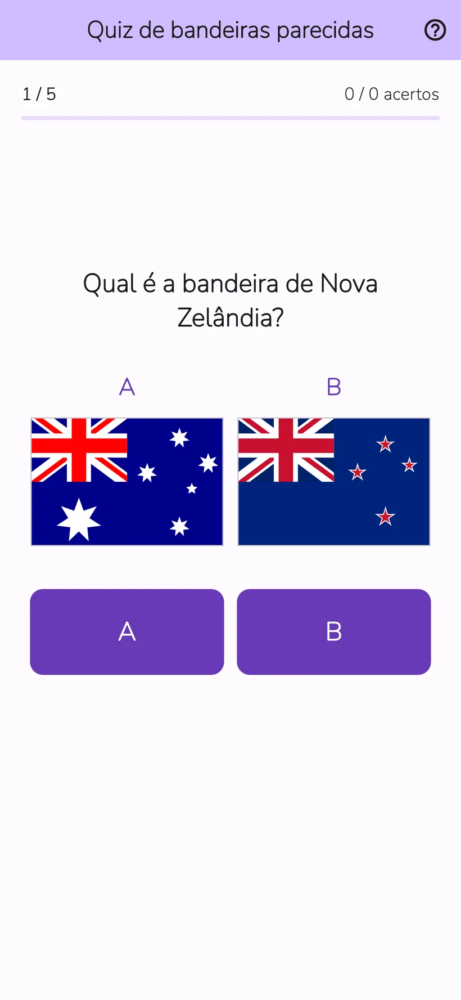
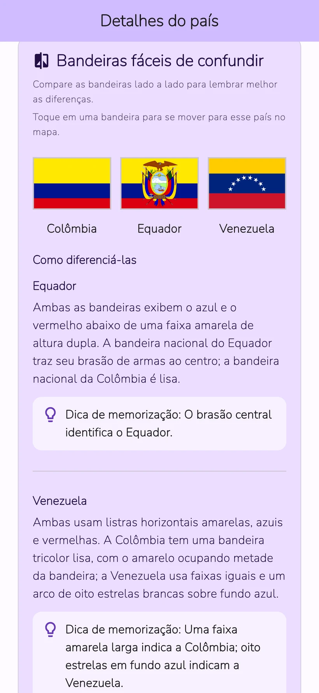
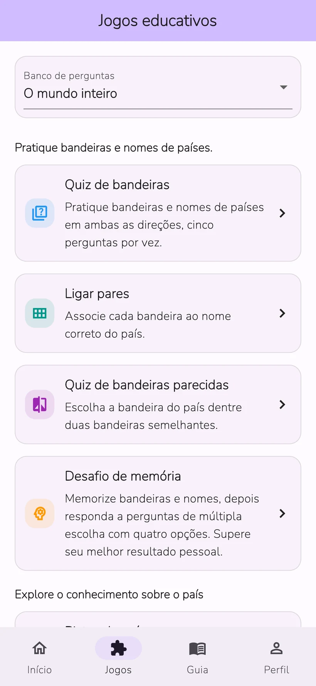

01
Quiz de bandeiras
Escolha o país de uma bandeira ou a bandeira de um país.
Quiz de Bandeiras: Awa Pop
Estude as bandeiras e capitais de 206 países e territórios.
Confira o que lembra com lições diárias e oito jogos.
iPhone e Android · Download gratuito com compras no app


Telas reais do app
Aprenda bandeiras e nomes de países e confira o que lembra em um quiz. As revisões usam seu histórico de aprendizado.
A tela de progresso mostra dados de exemplo. A análise detalhada está disponível no Study Plus.
Compare cores e desenhos para reconhecer as diferenças. Experimente com as bandeiras da França e da Itália.
Exemplo interativo criado para este site sobre como diferenciar bandeiras. A apresentação é diferente da do app.
Pratique bandeiras, nomes de países, pontos turísticos e países vizinhos. Escolha um jogo para o assunto que quer estudar.
Escolha o país de uma bandeira ou a bandeira de um país.
Ligue cada bandeira ao nome do país.
Escolha a bandeira correta entre dois desenhos parecidos.
Memorize bandeiras e países e responda a perguntas de múltipla escolha.
Identifique o país conforme as pistas aparecem.
Identifique países por pontos turísticos e patrimônio natural.
Compare população, área e outros dados de dois países.
Escolha os países que compartilham uma fronteira terrestre.


Bandeiras, capitais, mapas, origens e cultura de 206 países e territórios. Ficou curioso sobre um país no quiz? Continue a descoberta na página dele.
Conheça a cultura e as recomendações dos países e territórios de quem participa. As publicações são traduzidas e revisadas antes de aparecerem nos idiomas do app.
O apelido é opcional. Você pode denunciar ou ocultar publicações. Os vídeos do YouTube abrem fora do app.
Aprendizado diário
Um vídeo com recompensa disponível adiciona 3 usos à categoria escolhida naquele dia. Reabrir o mesmo país no mesmo dia não consome outro uso.
Uso ilimitado sem anúncios
Planos mensal e anual com renovação automática
O plano mensal oferece 1 mês de teste grátis para quem atende aos requisitos. O plano anual não inclui teste grátis.
Confira o preço, os requisitos do teste, o valor após o teste e o período de renovação na tela de compra do app.
O app está disponível em 10 idiomas: japonês, inglês, espanhol, alemão, coreano, tailandês, indonésio, francês, português do Brasil e chinês tradicional de Taiwan.
A sessão do dia e a revisão habitual são gratuitas. Você pode abrir os detalhes de 3 países diferentes e iniciar até 3 partidas no total por dia na aba de jogos. Um vídeo com recompensa disponível adiciona 3 usos à categoria escolhida naquele dia.
O plano mensal oferece 1 mês de teste grátis para quem atende aos requisitos. O plano anual não inclui teste grátis. Confira o preço e os requisitos na tela de compra do app.
Não é necessário criar uma conta nem fazer login. Você pode enviar Histórias de países e comentários pelo app.
Os registros de aprendizado ficam salvos no aparelho. Não há sincronização automática com outros dispositivos. Restaurar compras e transferir o histórico de aprendizado são funções diferentes.
Quem tem curiosidade por bandeiras e geografia pode aprender no próprio ritmo. O app inclui anúncios, compras opcionais, publicações e links externos. Para crianças pequenas, é recomendável o acompanhamento de uma pessoa responsável.
O envio exige a aceitação das regras de publicação, da tradução e da divulgação. As publicações aparecem após a tradução e a revisão. O apelido é opcional. Você pode excluir suas publicações, denunciar conteúdo e ocultar publicações.
Experimente as lições diárias e os oito jogos no app.
iPhone e Android · Download gratuito com compras no app